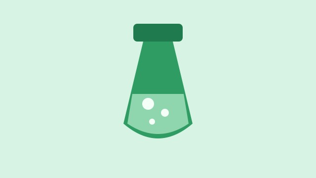
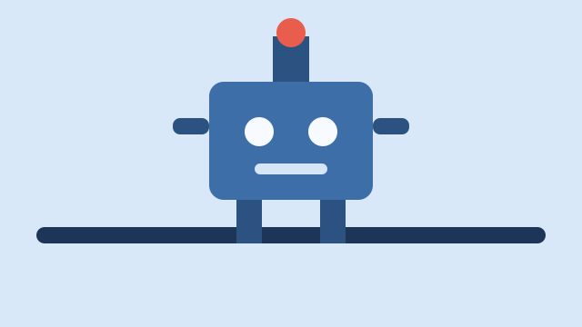
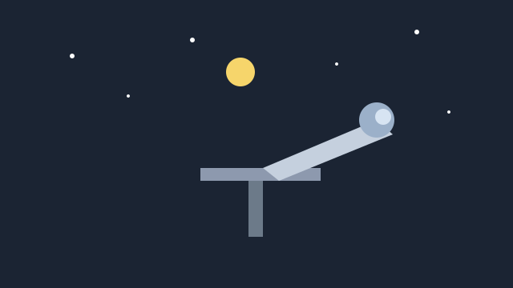
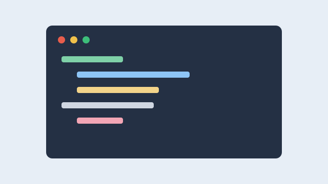
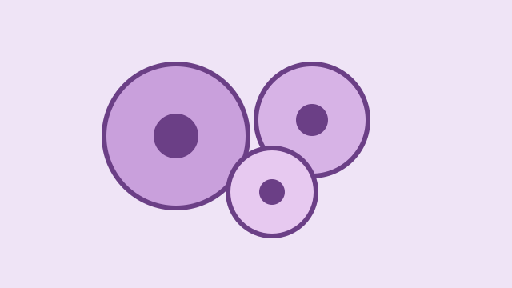
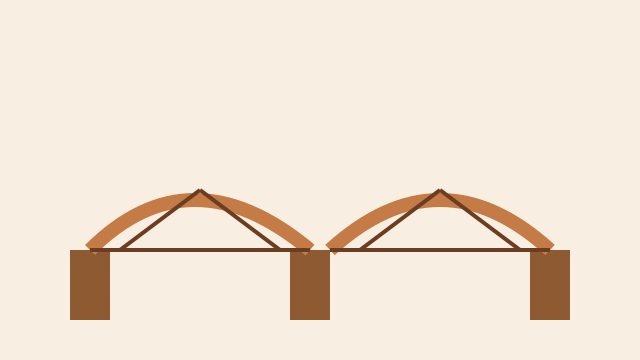

Kimi
Reaksione që ndryshojnë ngjyrë
09:00 – 10:00 · Salla A
Përziejmë dy tretësira dhe shohim si kalon ngjyra nga gjelbert në blu.
Shiko detajetMerr syze, shkruaj çfarë sheh
Programimi në WWW · Pikënisja
Festivali zgjat një dite. Zgjidh një karte, shiko orarin dhe detajet.

Kimi
09:00 – 10:00 · Salla A
Përziejmë dy tretësira dhe shohim si kalon ngjyra nga gjelbert në blu.
Shiko detajetMerr syze, shkruaj çfarë sheh

Robotikë
10:15 – 11:30 · Salla B
Ndërtojmë një robot të vogël që ecën mbi shtegun e vizatuar në letër.
Shiko detajetGrupet janë nga katër veta. Në fund e provojmë në pistën e gjatë.

Astronomi
11:45 – 13:00 · Oborri
Bëjmë Diellin dhe planetët me topa, letër dhe spango, pastaj i vendosim sipas largësisë.
Shiko detajetNëse bie shi, modeli bëhet brenda në korridorin e katit të dytë.

Programim
13:00 – 14:15 · Laboratori
Shkruajmë një lojë ku shtyp një buton dhe pikët rriten në ekran.
Shiko detajetMjafton një shfletues. Nuk duhet të instalosh asgjë në kompjuter.

Biologji
14:30 – 15:30 · Laboratori i biologjisë
Vëmë një fletë qepe në xham dhe gjejmë murin e qelizës.
Shiko detajetÇdo nxënës shënon një vizatim të shkurtër në fletore.

Fizikë
16:00 – 17:00 · Salla C
Ndërtojmë ura me shkopinj dhe provojmë cila qëndron më gjatë.
Shiko detajetFiton grupi që mban më shumë libra pa e thyer urën.